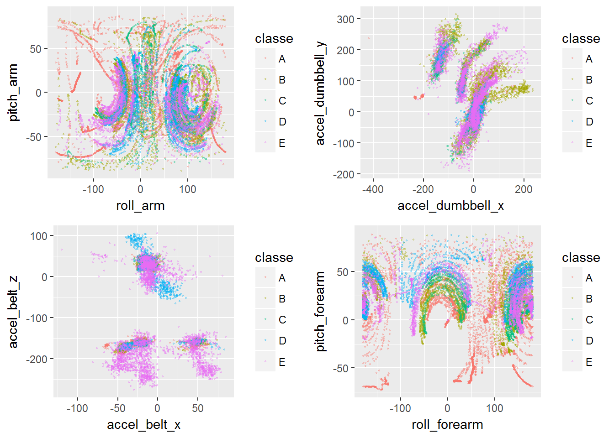

Let’s start by loading the libraries and the data in. We observe that a number of supposedly numerical fields contain #DIV/0! as a value (someone has been using Excel) and we take care to consider these values as NA (even if possibly these could indicate something different than the non-value).
library(ggplot2);library(grid);library(gridExtra);library(caret);library(klaR);## Loading required package: lattice## Loading required package: MASStrdata <- read.csv("Y:\\Learning\\PracticalMachineLearning\\pml-training.csv",na.strings = c('NA', '#DIV/0!'));
tsdata <- read.csv("Y:\\Learning\\PracticalMachineLearning\\pml-testing.csv", na.strings = c('NA', '#DIV/0!'));First, for some exploratory analyses, we can try to see some patterns in the data using several plots
pgeom<-geom_point(alpha=0.3, size=0.3);
p1<-ggplot(trdata, aes(x=roll_arm, y=pitch_arm, col=classe))+pgeom;
p2<-ggplot(trdata, aes(x=accel_dumbbell_x, y=accel_dumbbell_y, col=classe))+pgeom;
p3<-ggplot(trdata, aes(x=accel_belt_x, y=accel_belt_z, col=classe))+pgeom;
p4<-ggplot(trdata, aes(x=roll_forearm, y=pitch_forearm, col=classe))+pgeom;
grid.arrange(p1, p2, p3, p4, ncol=2, nrow=2);
We see that there are complex patterns at play, some that suggest that linear models may not be very useful. Also it’s worth observing that measurements are taken in sequence, and it is the sequence of measurements that defines a pattern of correct or wrong movement (class).
The task is however to provide instant input, therefore predict the class based on a single time point irrespective of the time window.
To make analysis easier, we remove some variables that may introduce a skew. For instance, we notice that the rows are sorted in order of class, so in order to avoid a fake linearity being introduced by the row number we remove it. We also remove fields that have to do with the user, timestamp and time window.
We calculate a list of fields that we will remove from both data frames. This will include aggregated calculations that are available for time window rows only.
trnames <- names(trdata);
rtrNames <-c('X','user_name','raw_timestamp_part_1','raw_timestamp_part_2','cvtd_timestamp','new_window','num_window',trnames[grepl('kurtosis|skewness|max_|min_|amplitude_|var_|avg_|stddev_', trnames)])
tsnames <- names(tsdata);
rtsNames <-c('X','user_name','raw_timestamp_part_1','raw_timestamp_part_2','cvtd_timestamp','new_window','num_window',tsnames[grepl('kurtosis|skewness|max_|min_|amplitude_|var_|avg_|stddev_', tsnames)])We recreate the training and test data removing the non-important names and we check that we don’t have NA values.
strdata <- trdata[, trnames[!(trnames %in% rtrNames)]];
stsdata <- tsdata[, tsnames[!(tsnames %in% rtsNames)]];
all(colSums(is.na(strdata))==0);## [1] TRUEall(colSums(is.na(stsdata))==0);## [1] TRUEThe classe variable is the prediction variable, we split the data into a training and a test
set.seed(54321)
inTrain <- createDataPartition(strdata$classe, p=0.7, list=FALSE);
training <- strdata[inTrain, ];
testing <- strdata[-inTrain, ];We try first a few simple models - a Linear Discriminant Analysis after a PCA transformation, a Naive Bayes on a PCA transformation with 10 components and a naive Bayes on the original data set.
preproc <- preProcess(training[,-53], method="pca", pcaComp=10)
trainingPC<-predict(preproc, training[,-53]);
testingPC<-predict(preproc, testing[,-53]);
ctrl <- trainControl(preProcOptions = list(thresh = 0.90));
modlda <- train(classe ~ ., method="lda", preProcess="pca", data=training, trControl = ctrl);
modnbpca <- NaiveBayes(training$classe ~ ., data=trainingPC);
modnb <- NaiveBayes(classe ~ ., data=training)Let’s check the obtained accuracy
print(confusionMatrix(testing$classe, predict(modlda, testing))$overall['Accuracy']);## Accuracy
## 0.4968564print(confusionMatrix(testing$classe, predict(modnbpca, testingPC)$class)$overall['Accuracy']);## Accuracy
## 0.4487681print(confusionMatrix(testing$classe, predict(modnb, testing)$class)$overall['Accuracy']);## Accuracy
## 0.4776551Not that great - actually worse than by chance. These models are of not much use.
We need to take another approach - we try random forests
control <- trainControl(method="cv", number=10, repeats=3)
modrf <- train(classe ~ ., data=training, method="rf", ntree=100, trControl=control);
cm <- confusionMatrix(testing$classe, predict(modrf, testing));
print(cm);## Confusion Matrix and Statistics
##
## Reference
## Prediction A B C D E
## A 1671 3 0 0 0
## B 8 1128 3 0 0
## C 0 5 1017 3 1
## D 0 0 6 958 0
## E 0 0 2 2 1078
##
## Overall Statistics
##
## Accuracy : 0.9944
## 95% CI : (0.9921, 0.9961)
## No Information Rate : 0.2853
## P-Value [Acc > NIR] : < 2.2e-16
##
## Kappa : 0.9929
## Mcnemar's Test P-Value : NA
##
## Statistics by Class:
##
## Class: A Class: B Class: C Class: D Class: E
## Sensitivity 0.9952 0.9930 0.9893 0.9948 0.9991
## Specificity 0.9993 0.9977 0.9981 0.9988 0.9992
## Pos Pred Value 0.9982 0.9903 0.9912 0.9938 0.9963
## Neg Pred Value 0.9981 0.9983 0.9977 0.9990 0.9998
## Prevalence 0.2853 0.1930 0.1747 0.1636 0.1833
## Detection Rate 0.2839 0.1917 0.1728 0.1628 0.1832
## Detection Prevalence 0.2845 0.1935 0.1743 0.1638 0.1839
## Balanced Accuracy 0.9973 0.9953 0.9937 0.9968 0.9991This looks a lot better - in fact this is as good as it gets. We did build the model with cross-validation to avoid over-fitting to the selected training set, and we repeated a few times. In fact, we tried several parameters for tree size and number of cross-validations, and results are fairly similar. Random Forests appear to be inherently suitable for this problem.
The out-of-sample error is
as.numeric(1-cm$overall['Accuracy']);## [1] 0.005607477Finally we can print out the predictions
predict(modrf, stsdata);## [1] B A B A A E D B A A B C B A E E A B B B
## Levels: A B C D E